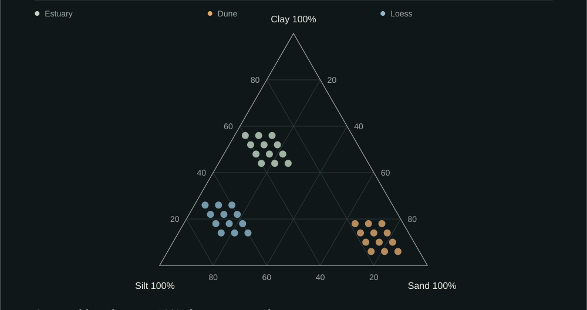
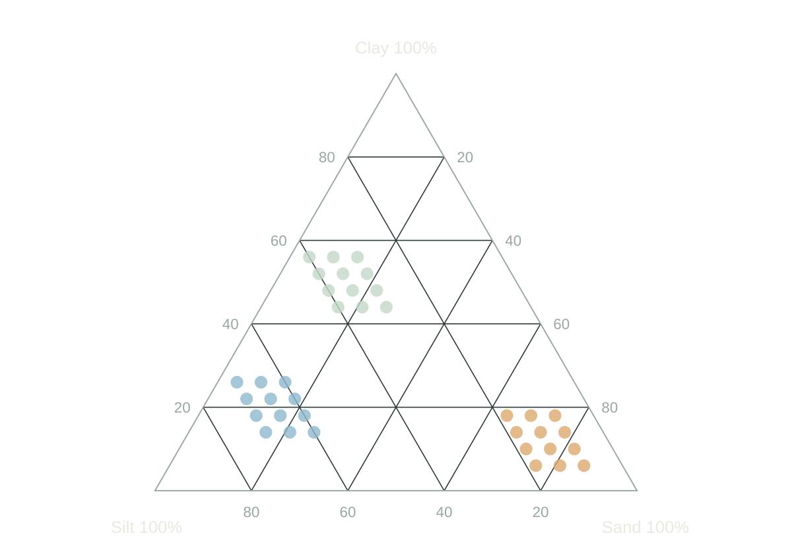

A FIELD COLLECTION / VOL. 0220 WORKS · 12 UNCOMMON METHODS
An after-hours observatory of data.
The shape
of evidence.
Some questions need a different kind of graph.
A collection of compositions, traces, overlaps and uncertainty.

PLATE 013THREE PARTS. ONE WHOLE.Built to be read. Made to be questioned.SCROLL TO EXPLORE ↓
SELECTED WORKS / 01—20
A study in many forms.
All data is synthetic.
Questions, methods and sources accompany every work.


THE PRACTICE BEHIND THE PICTURES
Give your Agent
a sense of form.
An intent-driven Skill for moving from a user's question to an appropriate visual expression. Task first. Data semantics intact. Every interaction has a purpose.
Read the Skill ↗QUICK INSTALL
npx skills add PlevanTem/visual-storytelling-by-graph --skill visual-storytelling-by-graphUse with a compatible Agent. Core instructions do not require a specific chart library.
01Understand the question02Preserve the evidence03Choose an expression04Render, inspect, revise